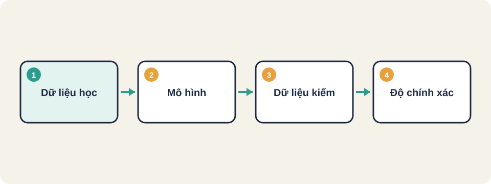
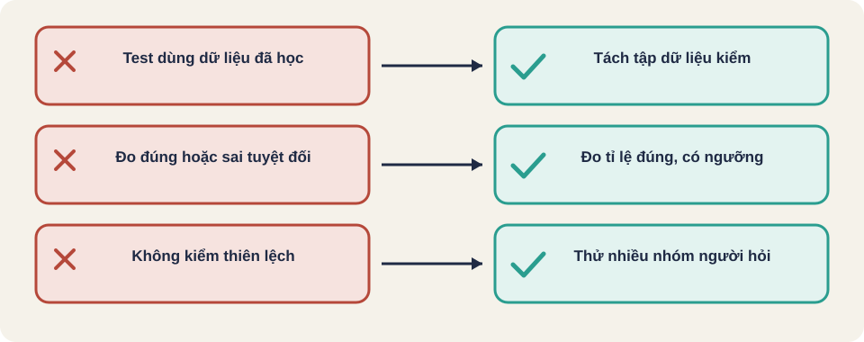

Hình vẽ gốc, dùng để minh họa thứ tự các bước chính của bài.
Kiểm thử mô hình học máy và chatbot khác phần mềm thường ở đâu: kết quả không cố định, dữ liệu, độ chính xác và thiên lệch.

Hình vẽ gốc, dùng để minh họa thứ tự các bước chính của bài.
Chuẩn bị bộ dữ liệu có đáp án. Tính tỉ lệ dự đoán đúng, và so với ngưỡng đã thống nhất, ví dụ 80%.
Nếu test dùng lại dữ liệu đã học, kết quả đẹp giả tạo. Tách riêng một tập để kiểm tra.
Tổng thư: 10
Dự đoán đúng: 8
Độ chính xác = 8 / 10 = 80%
Ngưỡng yêu cầu: 80% → đạtThuật ngữ trong slide này: Độ chính xác (accuracy): Tỉ lệ dự đoán đúng trên tổng số mẫu kiểm.
Thử cùng câu hỏi nhưng thay tên, giới tính, vùng miền để xem kết quả có khác không. Thử thêm câu rất dài, câu có lỗi chính tả, câu có ngôn ngữ lẫn lộn.
Liệt kê 3 nhóm ca kiểm thử cho một chatbot trả lời về giờ mở cửa cửa hàng. Gợi ý: (1) ca bình thường: hỏi giờ mở cửa ngày thường; (2) ca biên: ngày lễ, hỏi đúng giờ đóng cửa; (3) ca bất thường: câu sai chính tả, câu ngoài phạm vi như hỏi giá sản phẩm.

Thuật ngữ trong slide này: Thiên lệch (bias): Kết quả bị lệch theo một nhóm, như giới tính, vùng miền, hoặc cách hỏi.
Độ chính xác (accuracy)
Thiên lệch (bias)
Tập dữ liệu học và tập kiểm (training vs test set)
Thuật ngữ trong slide này: Độ chính xác (accuracy): Tỉ lệ dự đoán đúng trên tổng số mẫu kiểm. · Thiên lệch (bias): Kết quả bị lệch theo một nhóm, như giới tính, vùng miền, hoặc cách hỏi.
Một mô hình có thể trả lời khác nhau cho cùng một câu hỏi, và kết quả phụ thuộc vào dữ liệu đã học.
Thuật ngữ trong slide này: Độ chính xác (accuracy): Tỉ lệ dự đoán đúng trên tổng số mẫu kiểm.
Nếu dữ liệu kiểm thử đã xuất hiện trong dữ liệu học, kết quả trông đẹp giả tạo. Cần giữ một tập kiểm tra riêng, không dùng lại dữ liệu học.
Kiến thức chung, chưa đối chiếu nguồn gốc.
Thuật ngữ trong slide này: Tập dữ liệu học và tập kiểm (training vs test set): Dữ liệu dùng để dạy mô hình (học) và dữ liệu riêng để kiểm (kiểm). Hai tập phải tách biệt.
Nguồn: github.com/PaulWaltersDev/FreeLearningResourcesForSoftwareTesters, mục "Mục mở rộng (không có mục riêng trong repo)". Tìm tên tài liệu trong repo để lấy liên kết.
Thuật ngữ trong slide này: Độ chính xác (accuracy): Tỉ lệ dự đoán đúng trên tổng số mẫu kiểm.